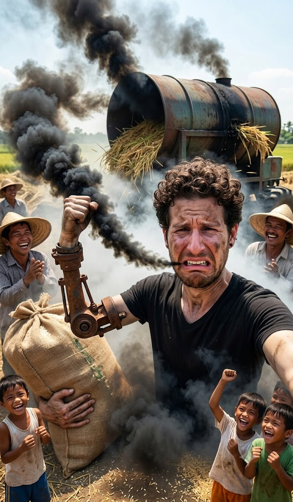

Originally written July 2010

People all over the world enjoy a food called rice. It is a universal staple across countless nations due to its widespread availability, structural affordability, and immense flexibility when it comes to the culinary arts. In the Philippines, this rule holds absolute. For the majority of the workers living on the plantation where I am currently deployed, rice comprises roughly 90% of their weekly caloric intake—and frankly, it might be even higher for some households.
At the hacienda, as part of a collective community effort, management doesn't dedicate the entirety of the arable fields to sugarcane. A few plots are reserved specifically for cultivating rice, which is harvested and evenly distributed among all those who participated in planting, tending, and cutting the crop. A portion of the yield is also allocated directly to the community elders who, due to old age or physical injury, can no longer assist in the fields. Consequently, the families secure a stable supply of food without needing to exchange paper currency, enjoying each other's raw company out in the mud of the rice paddies—entirely divorced from any cinematic sense of hovering helicopters, tactical napalm, or similar historical nonsense.
Today, I had the distinct pleasure of participating in threshing: extracting the actual rice grains from the stalks. I am slightly embarrassed to admit that I did not take part in the actual cutting of the crop. The physical field work hadn't altered much over the preceding month, and I didn't anticipate any sudden evolution a couple of days ago when the crew marched out to harvest. Instead, I chose to take the afternoon off, travel into town, and watch a movie at the cinema—which was, in my estimation, the vastly superior choice.
Extracting rice from its stalk is an absolute blast, serving up a volatile mixture of sensory pleasure and industrial danger, provided you know exactly where to look. Let’s look at the pleasure first. Have you ever smelled hundreds of kilograms of freshly cut rice still clinging to the straw? It smells absolutely delicious—a bit fruity, a bit like fresh bread dough, and a bit like damp grass, though not overwhelmingly so. The moment you approach the massive mountains of raw stalks, the aroma hits your face like a wall. As for the danger element? Well, for that, you have to wait a moment.
Processing the harvest involves multiple interlocking components. Obviously, cutting the grass is step one, but the operation also demands a fleet of helping hands with—as my dad fondly likes to phrase it—"strong backs and weak minds," alongside a massive piece of agricultural machinery. Witnessing this apparatus in operation is absolutely not for the faint of heart. Powered by a roaring, four-horsepower diesel engine that functions as a lawnmower, generator, and high-frequency chassis rattler all at once, this contraption can be maneuvered anywhere because it rides on tiny steel wheels. Visually, it closely resembles a gargantuan barbecue smoker welded together out of old oil barrels. The best way I can classify the machine is a combination shaker, centrifugal spinner, straw thrower, mesh sifter, and terrifying monster. It is where the extraction simultaneously begins and ends.
This roaring metal drum, rattling violently while spewing columns of thick smoke and other combustion products, must be fed entirely by hand. Dropping stalks into its maw is a terrifying process. I completely lacked the raw guts to do it initially, watching how fiercely the internal cylinders swallowed full mountains of straw, spitting empty chaff out one flank and clean rice grains down the other. It shakes, it smokes, it grunts, and it vibrates with a manic energy. Sadly, it won't reproduce or execute parlor tricks; what it will gladly do is rip your hand completely off your wrist, take your arm along with it, and, if it catches the right mood, spontaneously set itself on fire while emitting a series of metallic death rattles that force everyone in the vicinity to duck for cover.
Of course, once you properly acquaint yourself with the mechanics of the beast, working alongside it becomes a genuine pleasure. You grab a massive, heavy bundle of stalks from the common pile and feed it directly into the hungry intake chutes. As you scoop up a handful of the straw, you instantly notice hundreds of tiny creepy-crawlies traversing the leaves: armies of ants, fuzzy caterpillars, worms, slugs, exotic spiders, and a stray frog hopping around the bundles. Amazingly, your brain entirely stops registering their presence after you’ve processed the first hundred kilograms of grain.
The process is simple enough on paper; anyone possessing basic physical coordination and a bit of raw stamina can stand there feeding the furnace all day long. That is, unless you happen to be operating in the Philippines alongside a crew that seems completely unfazed by high-concentration diesel smoke blasting directly into their lungs. When I was originally invited to join the rice harvest, I anticipated a standard, physically demanding outdoor shift—no sweat. But the moment I took my station at the intake, I instantly realized why the laborers were moving with such deliberate slowness. The engineers had mounted the engine with its exhaust pipe venting straight out toward the operator’s face. This "pleasant" arrangement forces a continuous stream of hot, unrefined black carbon directly into your eyes and nose, causing your eyes to water uncontrollably, your sinuses to burn, and leaving you smelling exactly like a offshore drilling platform on fire. Because the smoke is so thick, it severely compromises your vision, making it an absolute guessing game to see where to drop the stalks, when it's safe to draw a breath, or even where your fellow operators are standing.
I stubbornly decided to brave the fumes, and for about five minutes, I managed okay. But as my eyes began tearing up and my hands turned entirely black with soot, I recognized the need to go tactical. I pulled off my shirt and tied it tightly around my lower face like a makeshift gas mask. That bought me a few more minutes, but the vapor still stung my corneas fiercely. Determined to give it everything I had, I recalled basic emergency fire exit training: I stepped away, soaked the fabric thoroughly with water, and re-wrapped it around my face. I lasted another five minutes before my lungs forced me to quit. Inhaling straight diesel exhaust is entirely unpleasant, and I stood there genuinely marvelling at how the four guys running the line—alongside ten other casual onlookers who were just standing around doing absolutely nothing—could tolerate the atmosphere without a word of complaint.
I excused myself from the platform and marched over to the plantation machine shops where my friends repair the tractor fleet, and where I had spent the morning welding steel reinforcements onto a utility trailer. I knew with absolute mechanical certainty that I had to fabricate an exhaust extension to redirect the column of smoke away from our faces—a basic engineering fix that apparently no one had bothered to attempt before my arrival. I rounded up the mechanics and laid out the problem. Rummaging through a three-meter-high scrap heap of rusted tractor components, we successfully salvaged an old exhaust pipe. Within an hour, we had cut, bent, and welded a custom elbow joint designed to make our lives vastly healthier. We marched the custom manifold back to the paddies, slipped it over the thresher's stock exhaust pipe, secured the connection with some scrap bailing wire, and prayed for a clean flow.
The moment the engine cracked to life, it was absolute poetry: the thick black smoke was being directed cleanly away from the operating platform. But, keeping entirely with my luck, about ten minutes into the run, the afternoon wind completely shifted directions, blowing the redirected exhaust right back into our faces anyway. I felt a flash of frustration, mostly because none of the local workers seemed to care whether the fumes hit them head-on or not; they barely even noticed the steel modification we had just